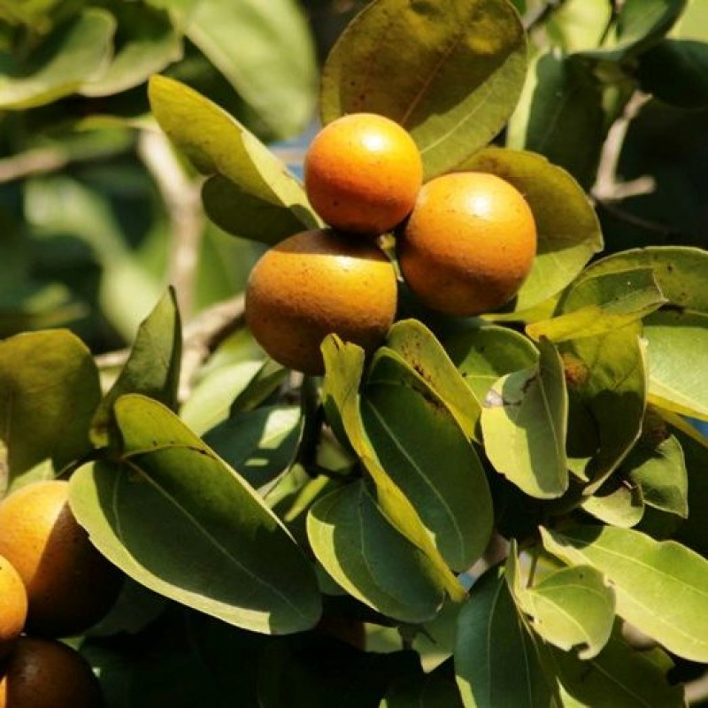

Overview of Kuchala
Kuchala, also known as Strychnos nux-vomica, is a plant with various traditional uses. Commonly referred to as Nux Vomica, its seeds and root bark are utilized in different therapeutic applications. Below is a comprehensive overview of this drug.
Basonym of Drug
Main Synonyms
- Kakatindooka
- Karaskara
- Vishatindooka
- Kaakpiluka
Regional Names
- Gujarati: Jherakuchala
- Hindi: Kuchala
- Malayalam: Kajjila
- Telugu: Mushini Ginjalu
- Tamil: Vyetikottai
- English: Nux-Vomica
Botanical Information
- Botanical Name: Strychnos nux-vomica
- Family: Loganiaceae
- Classification (Gana):
- Bhavprakash Nighantu: Aamradi Phala Varga
- Kaiyadeva Nighantu: Aushadhi Varga (Vish-Mushti)
External Morphology
A 15-20 feet high tree.
Useful Parts
Important Phytoconstituents
- Kajine
- Novacine
- Cuchiloside
- Strychnine
- Brucine
- Vomicine
Rasa Panchak
- Rasa: Katu (Pungent), Tikta (Bitter)
- Guna: Laghu (Light to digest)
- Virya: Ushna (Hot potency)
- Vipaka: Katu (Pungent taste conversion after digestion)
Action
Therapeutic Indications
- Kandughna (Treats pruritus)
- Kusthaghna (Useful in skin disorders)
- Deepan (Appetizer)
- Jwarahara (Anti-pyretic)
Therapeutic Uses
- Jwara: Pills made from Kuchala and Maricha powder with decoction of Vatsakabija are beneficial in fever.
- Aruchi: Kuchala, Hingu, and Navsadar powder with lemon juice for anorexia.
- Visuchika: Fried Kuchala powder, Hingu, and Navsadar with water for dysentery.
Dose
Formulations
- Vishtindooka Vati
- Agnitundi Vati
- Vatagajankusha Rasa
- Karaskar Ghrita
- Kuchala Taila
- Krimimudgara Rasa
Adverse Effects
Long duration and high dosage can cause dizziness, stiffness, convulsions, liver failure, breathlessness, and even death. Symptomatic treatment is advised during an emergency.
Remedial Measures
The antidote for Kuchala is Paribhadra (Erythrina Variegata). The purification process involves removing the outer skin of seeds, boiling in cow milk for 7 days, sundrying, frying in ghee, and then making into powder.